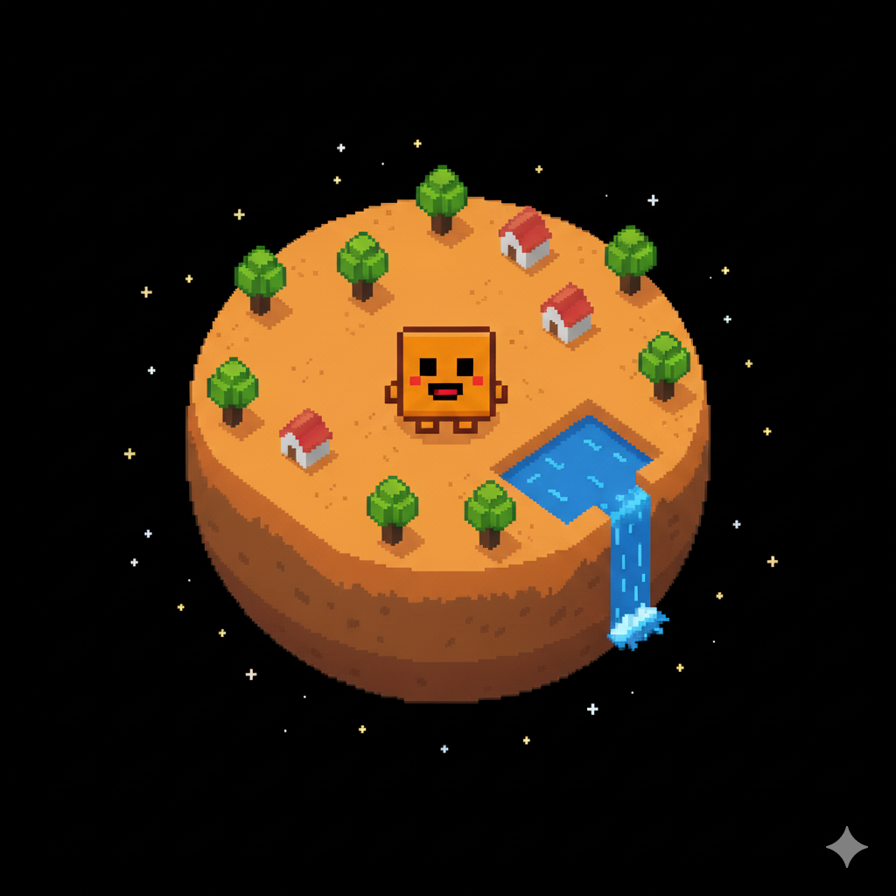

La Historia de Pixelito y su Planeta
¿Quién es Pixelito?
Pixelito es una pequeña criatura digital proveniente del planeta Pixelia, un mundo lleno de colores vibrantes y formas geométricas. Nació en una aldea pixelada donde todos los habitantes viven en armonía con la tecnología y la naturaleza.
El Planeta Pixelia
Pixelia es un planeta único, donde los árboles tienen hojas cuadradas y los ríos fluyen en líneas rectas. Sus habitantes, los Pixelianos, son conocidos por su creatividad y su amor por los juegos y los retos.
La Misión de Pixelito
Pixelito fue elegido para viajar a nuestro mundo digital y enseñar a las personas la importancia del cuidado, la amistad y la diversión responsable. ¡Ayúdale a cumplir su misión cuidándolo y jugando con él!